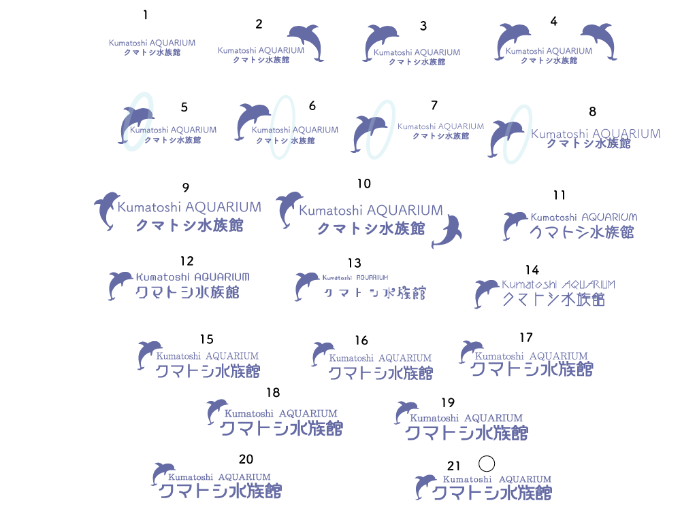

レスポンシブ対応
制作ツール
bxslider(メイン画像)
slick (下の画像)
lightbox(生き物たち)
getwaves (footer)
Google翻訳
Googleマップ
SCSS
favicon
touch-icon

{kind=link}
{kind=link}
気づいた事とポイント
要件定義から制作まで全て自分で作った水族館のサイトです。
まず全体の期間は一ヵ月半(2月14日~4月1日)で、それまでに完成させるというノルマがありました。
ワイヤーとカンプ
Photoshopで作成
既存の水族館サイトを隅々まで見てそれを参考に作っていきました。
ワイヤーで大まかにどういったデザインにするのかが決まる為、大変だったけど楽しく進むのも早かったです。
ただ同じような形のコンテンツ3つ置いただけで手抜き・・・。もう少し作りこめばと反省。
カンプは本来なら実際に使う写真を入れたりして、もっと作りこんでいないといけないが
完成度が低く色を変え文字を入れただけになってしまい反省点だらけになってしまった。
ロゴ
illustratorで作成
ロゴは水族館のサイトなのでイルカを入れたかった。
イルカのアイコンは自分でフリーのイルカイラストをペンツールを使い
svgを作成。
カンプを進めてる時から作っていて、最終的に21回作り直した。

サイト制作|トップ
カンプから大幅にデザインが変わった。
参考に色々なサイトを見ていたが、ナビゲーションはメインビジュアルの上にある事が多く、やっぱり・・・と思いながら下から上に移動させた。
ナビゲーションを半透明にしたりスクロール量を取得し特定の位置にきたら、ナビを隠すなどしてるところがちょっとしたポイントだったりする。
ただやりたかった形には完璧にはできてなく例えば料金チケット部分のアイコンは
文字を下アイコンを上にしたかった。
うまくできたと思ったら枠からハミ出てしまっていたり、クリック範囲がおかしくなったりで最終的に今の形になった。
悔しいところ。
ニュース欄は既存サイトを参考に、タイトルを横に表示するようにしました。
ニュースとJsは外部ファイルから呼び出しています。
moreは押すと対応するページに飛びます。
more以外にもfooterにあるよくある質問など作っています。
このサイトだけに限らず作り終えてからも細かい調整などをしていってます。
サイト制作|各ページ
トップページが完成した時点で残り7日しかなく、コンテンツ不足感がある。
だが、各ページのトップは今いるページがわかるように画像をcssで半透明にしその上に文字を入れしっかり作った。
このサイトは画像が非常に多いため、jpgに変換し容量を削減しました。
レスポンシブ
レスポンシブはpcからスマホまで全てに対応させています。
768pxで読み込むjsファイルをSP用とPC用で変えています。
1056pxでナビゲーションを幅いっぱいにしています。
867pxでコンテンツ調整
801pxでタブレット用に調整。ハンバーガーメニューに置き換え
500px、366pxでスマホ用に調整
反省点
サイト制作はワイヤー、カンプに結構な時間を使ってしまい16日程度しかなくとても大変だった。
ワイヤーはもう少し早く出来てもいいと思うし、カンプももっとちゃんとしたのを作るべき。
サイトが全体的にチープというか古臭いというか、素人が頑張って作ったサイト感がすごくする。
思うに、それぞれのコンテンツ幅がすごく大きいからだと思っている。
他のサイトはもっとスマートでスッキリしていて綺麗。
だけど、今回このサイトを作ってCSSに関しては自分の中でものすごくレベルアップしたなと感じました。
二週間のコーディング作業で三ヶ月分のコーディングをしていた様な感じでした。
そして、 カンプは大事 だということを強く身に染みました。